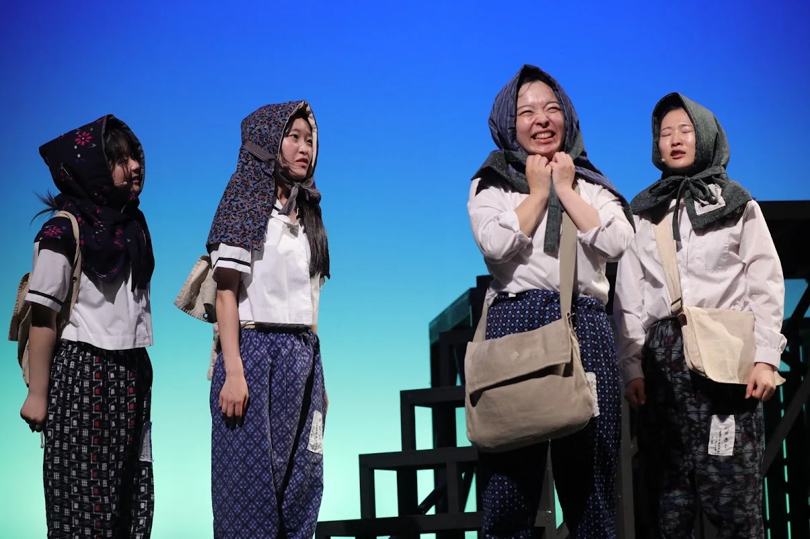
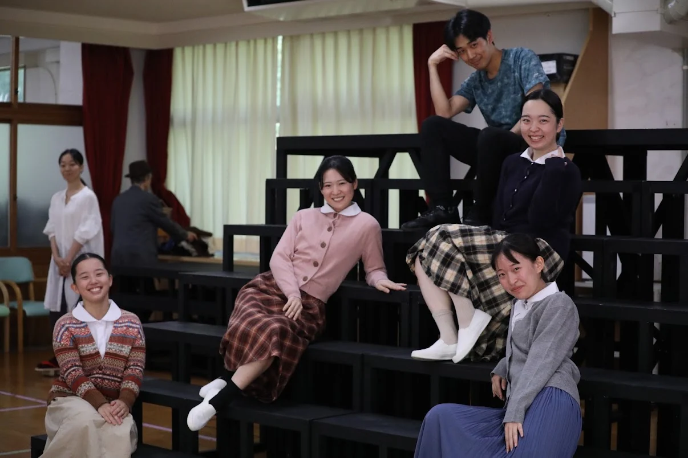
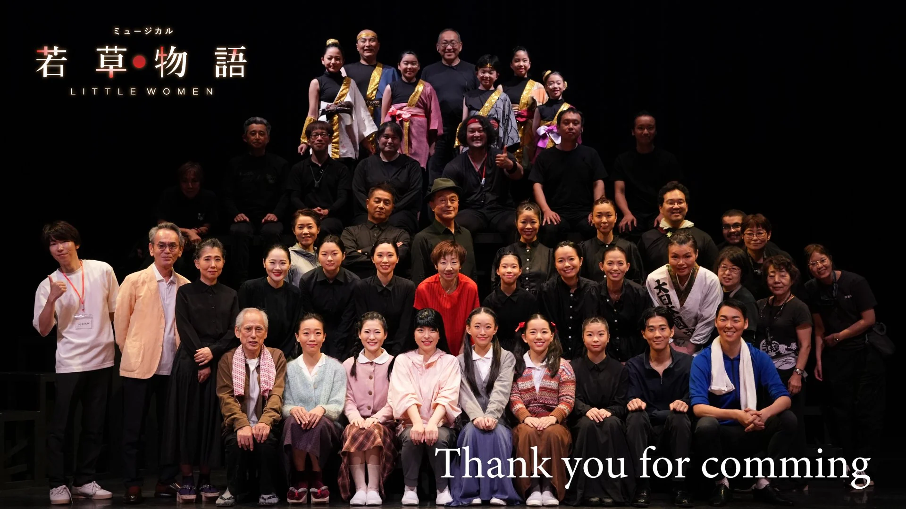
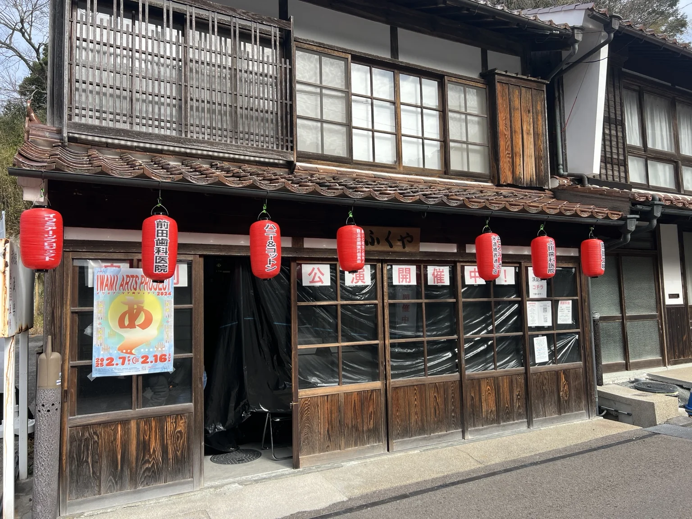
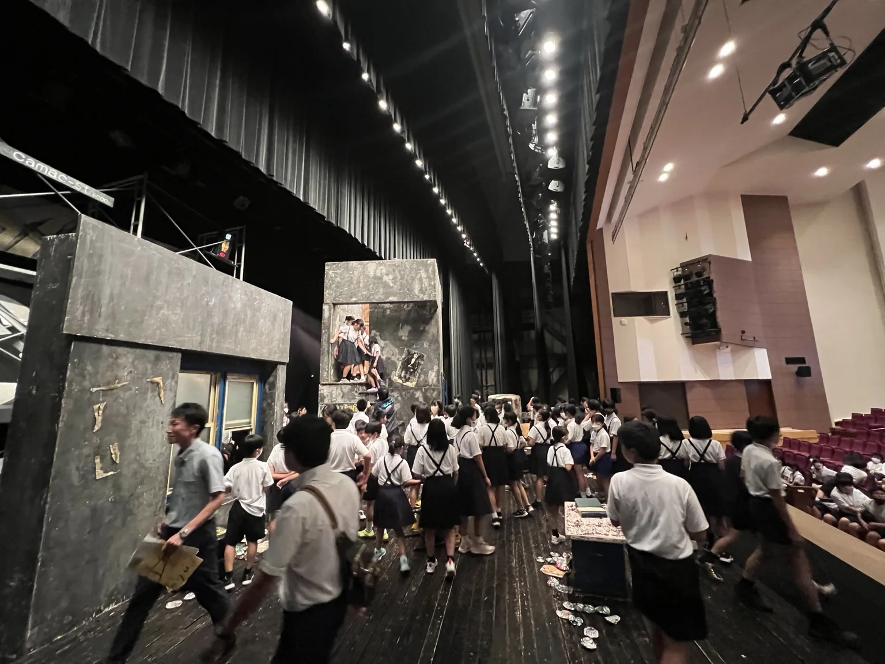
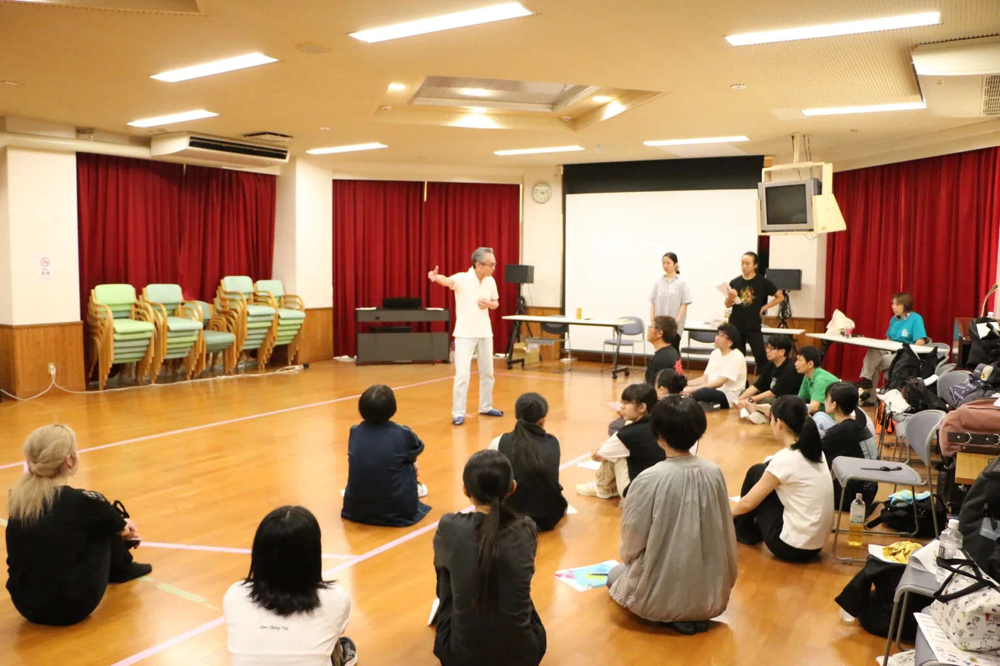
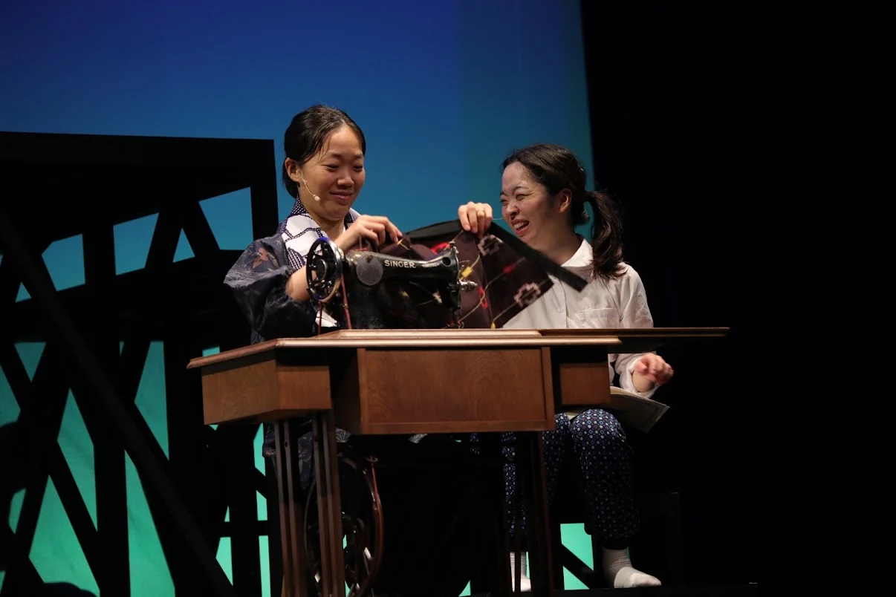

企業研修・人材育成
演劇のメソッドを活用した体験型企業研修です。相手の言葉を受けて即興で場面をつくるなど、プロの芸術家と一緒に、聴く力・伝える力を実践で磨きます。
ご相談いただける内容
- チームビルディング研修
- アイスブレイク
- コミュニケーション研修
- 新入社員研修
- プレゼンテーション研修
- リーダーシップ研修
- 職場の人間関係づくり
- 創造力・発想力を育てる研修

IWAMI ARTS PROJECTは、芸術の力を活用し、企業・行政・教育機関の皆様と新しい価値を創造します。
IWAMI ARTS PROJECT（イワミアーツプロジェクト）は、島根県西部・石見地方を拠点に、「石見から世界へ」を理念として活動する芸術団体です。国内外で活躍する芸術家と地域の人々をつなぎ、舞台芸術、教育、人材育成、国際交流、地域振興に取り組んでいます。
劇場で培った技術と経験を、企業活動や教育、観光、地域づくりへ。企画から制作、実施、広報まで、ご要望に合わせてご提案します。
演劇のメソッドを活用した体験型企業研修です。相手の言葉を受けて即興で場面をつくるなど、プロの芸術家と一緒に、聴く力・伝える力を実践で磨きます。
温泉街の建物を公演会場に、まちの記憶を物語に。住民や行政の皆様と、地域に根ざした文化芸術事業を企画します。
舞台を観る、声や身体で表現する、仲間と作品をつくる。学年や授業のねらいに合わせて、子どもたちの創造力・表現力・協調性を育む機会を設計します。
島根県を拠点に、イベント企画と舞台制作を手がけます。企業の節目を祝う式典から市民参加のミュージカルまで、企画・演出・出演者の手配・当日の運営を担います。
地域や企業の魅力を取材し、届けたい相手に合わせて映像にします。公演前の告知から当日の記録、事業後の発信までご相談いただけます。
海外の表現者と石見の人々が、ともに学び、作品をつくる機会を企画します。交流先やテーマを検討する段階からご相談ください。

国内外で活躍する俳優、演出家、音楽家、美術家とのネットワークを生かし、多世代が参加する市民舞台を制作。稽古から本番までを支えます。
温泉津の町並みや歴史を生かした芸術祭を開催。学校や教育委員会とも連携し、石見の子どもたちが舞台と出会う機会をつくってきました。
出演者や講師の手配、会場に合わせた演出、運営、記録・広報まで一貫して対応します。事業の目的と、誰に届けたいかをお聞かせください。

2026年8月、あすてらすホールで全3公演が満席に。約800人が鑑賞しました。山陰の俳優と市民キャストが約5か月にわたって稽古を重ねた作品です。

2025年2月の10日間、温泉街の歴史ある建物や湯里まちづくりセンターで演劇・講談・音楽を展開。まちを歩き、地域の人と出会う芸術祭を企画・運営しました。

2023年、文化庁事業を活用し東京演劇集団風を招聘。大田市内17校を対象に合同鑑賞会を企画・統括し、約1,000人の児童・生徒が鑑賞しました。

2025年7月、湯里で開いた2日間の演劇教室に約30人が参加。地域にいながら、演技・歌唱・ダンス・身体表現を専門家から直接学ぶ場をつくりました。

2026年6月の舞台美術ワークショップには2日間で13人が参加。舞台美術家・鈴木健介さんと空間づくりを学び、『若草物語』で使う舞台セットの製作に取り組みました。

石見の暮らしを伝える地域番組を企画・制作。2026年11月14日にお正月スペシャルを撮影しました。放送・配信は2027年1月開始予定です。
業種や組織の規模を問わず、全国からご相談を承ります。
企業協賛・パートナー募集
IWAMI ARTS PROJECTでは、活動理念に共感し、ともに新しい可能性を生み出してくださる企業・団体を募集しています。
文化芸術活動への協賛、子どもたちの芸術体験や国際文化交流事業への支援、物品提供・技術協力を受け付けています。企業スポンサー、CSR・社会貢献活動、地域貢献活動としての単発のご協力から、共同事業・業務提携を通じた継続的なパートナーシップまでご相談ください。
協賛・連携を相談する ↓小規模なワークショップから大規模な文化事業まで、島根県内・全国で対応します。目的、ご予算、会場に合わせた個別見積もりです。
企画や予算が決まる前でもご相談いただけます。入力後にメールアプリで内容を確認し、送信してください。
IWAMI ARTS PROJECT
代表 竹内大樹
島根県大田市温泉津町湯里